Envy-free economic allocations
Visualizing an algorithm from an economics paper
Justin Pearson
2018-10-20
Summary
We illustrate an algorithm from an economics paper by a Dutch economics professor named Flip Klijn. The paper addresses the problem of allocating n objects to n people (each person gets 1 object). Each person derives some amount of utility (“happiness”) from each object. After allocating the objects, some people may envy others, e.g., Alice’s utility would be higher if she had been allocated Bob’s object instead of her own. Indeed, depending on people’s preferences for the objects, it may not be possible to allocate the objects in an envy-free way: For example, if we have 1 ferrari and 9 goats to allocate, everyone will envy the ferrari owner. The paper considers the following idea: Suppose whoever got the ferrari had to give $10,000 to each person who got a goat. This sweetens the goat prize and makes the ferrari prize less attractive: Who wants a ferrari if you also have to pay $90,000? I would rather own a goat and $10,000 than a ferrari and -$90,000. If enough money is transferred from the ferrari-owner to the goat-owners, the goat-owners wouldn’t envy the ferrari owner. The paper presents an algorithm to allocate objects and transfer money between people so that everyone is happy with his or her allocation of object and money.
Source
“An Algorithm for Envy-free Allocations in an Economy with Indivisible Objects and Money”
Flip Klijn, Department of Econometrics and CentER, Tilburg University, The Netherlands
https://pdfs.semanticscholar.org/1722/1cbf08f9a28e527fb9037e96260f4da73345.pdf
Outline
A set Q:={1,...,n} of n indivisible objects and an amount M≥0 of money are to be distributed among a set N:={1,...,n} of agents.
Utility: Agents derive utility (happiness) from objects and from money:  is how much agent i likes object j and
is how much agent i likes object j and  is agent i’s utility per unit money. (We assume each agent’s money-utility is linear.)
is agent i’s utility per unit money. (We assume each agent’s money-utility is linear.)
Allocation: Each agent is assigned an object and an amount of money: Agent i gets object  and money
and money  , and therefore derives an amount of utility
, and therefore derives an amount of utility  . The object-allocation σ is a bijection from agents to objects, and the money-allocation
. The object-allocation σ is a bijection from agents to objects, and the money-allocation  has
has  .
.
Envy: Given an allocation (σ,x), the quantity  is the amount of “envy” that agent i feels for agent j.
is the amount of “envy” that agent i feels for agent j.
- The first term is how much agent i likes agent j’s loot. The second term is how much agent i likes his own loot.
- If e(i,j)>0, then agent i would have higher utility if he had agent j’s loot instead.
- If e(i,j)==0, then agent i would keep the same utility if he had j’s loot instead.
- If e(i,j)<0, then agent i would have lower utility if he had agent j’s loot instead.
Goal: find an allocation (σ,x) where no agent envies any other agent: e(i,j)≤0 for all i,j∈N.
Envy graph: A graph where agents are vertices and we have a directed edge i→j if e(i,j)≥0. If e(i,j)>0, i→j is called a strong edge. If e(i,j)==0 it’s called a weak edge.
Algorithm: Let a feasible allocation (σ,x) be given. Consider its envy-graph.
Step 1. If there are no strong arcs, then we have an envy-free allocation. Stop. Otherwise go to step 2.
Step 2. If there is a cycle containing a strong arc, then apply the permutation procedure and go to step 1. Otherwise pick a strong arc and go to step 3.
Step 3. Apply the sidepayment procedure to the picked arc and go to step 4.
Step 4. If a strong arc has been eliminated, go to step 1. If a cycle with a strong arc has emerged, go to step 2. Otherwise go to step 3.
Permutation procedure: You’ve got a cycle like i → j → k → i. Allocate objects and money like  ,
,  ,
,  . Now everyone has an allocation they like better.
. Now everyone has an allocation they like better.
Sidepayment procedure: You’ve got a strong edge i→j. Let P denote the agents for which a weak-edged path to i exists, and let R denote agents who are reachable along a weak-edged path starting from j. Take money from R and give it to P until a weak edge forms.
Discussion

A set Q:={1,...,n} of n indivisible objects and an amount M≥0 of money are to be distributed among a set N:={1,...,n} of agents.
![Graphics:PlotLabel /. Options[{imPreprocess[im_Image] := Module[{im2, bg, alpha}, im2 = ImageResize[im, 70] ; bg = RemoveBackground[im2, {White, .001}] ; alpha = bg//AlphaChannel//Dilation[#, 1] &//FillingTransform//Binarize ; SetAlphaChannel[im2, alpha] ], , SetAttributes[imPreprocess, Listable] ;, , RowBox[{RowBox[{agentPix, =, RowBox[{RowBox[{{, RowBox[{GraphicsBox[TagBox[RasterBox[RawArray[UnsignedInteger8, <859,1020,3>], {{0, 859}, {1020, 0}}, {0, 255}, ColorFunction -> RGBColor], BoxForm`ImageTag[System`Convert`CommonDump`ConvertText[Byte, System`Convert`HTMLDump`htmlsave, HTMLEntities -> {HTMLBasic}, AltMathOutput -> PlotLabel, WindowSize -> {2000, Automatic}, ManipulateOutput -> JPG, CSS -> mma.css, CharacterEncoding -> Automatic, ConversionStyleEnvironment -> None, ConversionRules -> Automatic, HeadAttributes -> {}, HeadElements -> {}, CSS -> Automatic, ConvertLinkedNotebooks -> False, MathOutput -> GIF, GraphicsOutput -> GIF, Graphics3DOutput -> Automatic, ManipulateOutput -> CDF, ConvertClosed -> True, ConvertReverseClosed -> False, FullDocument -> True, AltMathOutput -> FileName, TableOutput -> {TextForm, Automatic}, AnimationOutput -> Automatic, FilesDirectory -> HTMLFiles, LinksDirectory -> HTMLLinks, HTMLEntities -> {HTML}, AllowBlockMathML -> False, ShowStyles -> True, DataUri -> False, MathMLOptions -> {UseUnicodePlane1Characters -> False, IncludeMarkupAnnotations -> False, Entities -> MathML}], ColorSpace -> System`Convert`CommonDump`ConvertText[RGB, System`Convert`HTMLDump`htmlsave, HTMLEntities -> {HTMLBasic}, AltMathOutput -> PlotLabel, WindowSize -> {2000, Automatic}, ManipulateOutput -> JPG, CSS -> mma.css, CharacterEncoding -> Automatic, ConversionStyleEnvironment -> None, ConversionRules -> Automatic, HeadAttributes -> {}, HeadElements -> {}, CSS -> Automatic, ConvertLinkedNotebooks -> False, MathOutput -> GIF, GraphicsOutput -> GIF, Graphics3DOutput -> Automatic, ManipulateOutput -> CDF, ConvertClosed -> True, ConvertReverseClosed -> False, FullDocument -> True, AltMathOutput -> FileName, TableOutput -> {TextForm, Automatic}, AnimationOutput -> Automatic, FilesDirectory -> HTMLFiles, LinksDirectory -> HTMLLinks, HTMLEntities -> {HTML}, AllowBlockMathML -> False, ShowStyles -> True, DataUri -> False, MathMLOptions -> {UseUnicodePlane1Characters -> False, IncludeMarkupAnnotations -> False, Entities -> MathML}], ImageResolution -> {72, 72}, Interleaving -> True], Selectable -> False], DefaultBaseStyle -> System`Convert`CommonDump`ConvertText[ImageGraphics, System`Convert`HTMLDump`htmlsave, HTMLEntities -> {HTMLBasic}, AltMathOutput -> PlotLabel, WindowSize -> {2000, Automatic}, ManipulateOutput -> JPG, CSS -> mma.css, CharacterEncoding -> Automatic, ConversionStyleEnvironment -> None, ConversionRules -> Automatic, HeadAttributes -> {}, HeadElements -> {}, CSS -> Automatic, ConvertLinkedNotebooks -> False, MathOutput -> GIF, GraphicsOutput -> GIF, Graphics3DOutput -> Automatic, ManipulateOutput -> CDF, ConvertClosed -> True, ConvertReverseClosed -> False, FullDocument -> True, AltMathOutput -> FileName, TableOutput -> {TextForm, Automatic}, AnimationOutput -> Automatic, FilesDirectory -> HTMLFiles, LinksDirectory -> HTMLLinks, HTMLEntities -> {HTML}, AllowBlockMathML -> False, ShowStyles -> True, DataUri -> False, MathMLOptions -> {UseUnicodePlane1Characters -> False, IncludeMarkupAnnotations -> False, Entities -> MathML}], ImageSizeRaw -> {1020, 859}, PlotRange -> {{0, 1020}, {0, 859}}], ,, GraphicsBox[TagBox[RasterBox[RawArray[UnsignedInteger8, <859,1020,3>], {{0, 859}, {1020, 0}}, {0, 255}, ColorFunction -> RGBColor], BoxForm`ImageTag[System`Convert`CommonDump`ConvertText[Byte, System`Convert`HTMLDump`htmlsave, HTMLEntities -> {HTMLBasic}, AltMathOutput -> PlotLabel, WindowSize -> {2000, Automatic}, ManipulateOutput -> JPG, CSS -> mma.css, CharacterEncoding -> Automatic, ConversionStyleEnvironment -> None, ConversionRules -> Automatic, HeadAttributes -> {}, HeadElements -> {}, CSS -> Automatic, ConvertLinkedNotebooks -> False, MathOutput -> GIF, GraphicsOutput -> GIF, Graphics3DOutput -> Automatic, ManipulateOutput -> CDF, ConvertClosed -> True, ConvertReverseClosed -> False, FullDocument -> True, AltMathOutput -> FileName, TableOutput -> {TextForm, Automatic}, AnimationOutput -> Automatic, FilesDirectory -> HTMLFiles, LinksDirectory -> HTMLLinks, HTMLEntities -> {HTML}, AllowBlockMathML -> False, ShowStyles -> True, DataUri -> False, MathMLOptions -> {UseUnicodePlane1Characters -> False, IncludeMarkupAnnotations -> False, Entities -> MathML}], ColorSpace -> System`Convert`CommonDump`ConvertText[RGB, System`Convert`HTMLDump`htmlsave, HTMLEntities -> {HTMLBasic}, AltMathOutput -> PlotLabel, WindowSize -> {2000, Automatic}, ManipulateOutput -> JPG, CSS -> mma.css, CharacterEncoding -> Automatic, ConversionStyleEnvironment -> None, ConversionRules -> Automatic, HeadAttributes -> {}, HeadElements -> {}, CSS -> Automatic, ConvertLinkedNotebooks -> False, MathOutput -> GIF, GraphicsOutput -> GIF, Graphics3DOutput -> Automatic, ManipulateOutput -> CDF, ConvertClosed -> True, ConvertReverseClosed -> False, FullDocument -> True, AltMathOutput -> FileName, TableOutput -> {TextForm, Automatic}, AnimationOutput -> Automatic, FilesDirectory -> HTMLFiles, LinksDirectory -> HTMLLinks, HTMLEntities -> {HTML}, AllowBlockMathML -> False, ShowStyles -> True, DataUri -> False, MathMLOptions -> {UseUnicodePlane1Characters -> False, IncludeMarkupAnnotations -> False, Entities -> MathML}], ImageResolution -> {72, 72}, Interleaving -> True], Selectable -> False], DefaultBaseStyle -> System`Convert`CommonDump`ConvertText[ImageGraphics, System`Convert`HTMLDump`htmlsave, HTMLEntities -> {HTMLBasic}, AltMathOutput -> PlotLabel, WindowSize -> {2000, Automatic}, ManipulateOutput -> JPG, CSS -> mma.css, CharacterEncoding -> Automatic, ConversionStyleEnvironment -> None, ConversionRules -> Automatic, HeadAttributes -> {}, HeadElements -> {}, CSS -> Automatic, ConvertLinkedNotebooks -> False, MathOutput -> GIF, GraphicsOutput -> GIF, Graphics3DOutput -> Automatic, ManipulateOutput -> CDF, ConvertClosed -> True, ConvertReverseClosed -> False, FullDocument -> True, AltMathOutput -> FileName, TableOutput -> {TextForm, Automatic}, AnimationOutput -> Automatic, FilesDirectory -> HTMLFiles, LinksDirectory -> HTMLLinks, HTMLEntities -> {HTML}, AllowBlockMathML -> False, ShowStyles -> True, DataUri -> False, MathMLOptions -> {UseUnicodePlane1Characters -> False, IncludeMarkupAnnotations -> False, Entities -> MathML}], ImageSizeRaw -> {1020, 859}, PlotRange -> {{0, 1020}, {0, 859}}], ,, GraphicsBox[TagBox[RasterBox[RawArray[UnsignedInteger8, <850,850,4>], {{0, 850}, {850, 0}}, {0, 255}, ColorFunction -> RGBColor], BoxForm`ImageTag[System`Convert`CommonDump`ConvertText[Byte, System`Convert`HTMLDump`htmlsave, HTMLEntities -> {HTMLBasic}, AltMathOutput -> PlotLabel, WindowSize -> {2000, Automatic}, ManipulateOutput -> JPG, CSS -> mma.css, CharacterEncoding -> Automatic, ConversionStyleEnvironment -> None, ConversionRules -> Automatic, HeadAttributes -> {}, HeadElements -> {}, CSS -> Automatic, ConvertLinkedNotebooks -> False, MathOutput -> GIF, GraphicsOutput -> GIF, Graphics3DOutput -> Automatic, ManipulateOutput -> CDF, ConvertClosed -> True, ConvertReverseClosed -> False, FullDocument -> True, AltMathOutput -> FileName, TableOutput -> {TextForm, Automatic}, AnimationOutput -> Automatic, FilesDirectory -> HTMLFiles, LinksDirectory -> HTMLLinks, HTMLEntities -> {HTML}, AllowBlockMathML -> False, ShowStyles -> True, DataUri -> False, MathMLOptions -> {UseUnicodePlane1Characters -> False, IncludeMarkupAnnotations -> False, Entities -> MathML}], ColorSpace -> System`Convert`CommonDump`ConvertText[RGB, System`Convert`HTMLDump`htmlsave, HTMLEntities -> {HTMLBasic}, AltMathOutput -> PlotLabel, WindowSize -> {2000, Automatic}, ManipulateOutput -> JPG, CSS -> mma.css, CharacterEncoding -> Automatic, ConversionStyleEnvironment -> None, ConversionRules -> Automatic, HeadAttributes -> {}, HeadElements -> {}, CSS -> Automatic, ConvertLinkedNotebooks -> False, MathOutput -> GIF, GraphicsOutput -> GIF, Graphics3DOutput -> Automatic, ManipulateOutput -> CDF, ConvertClosed -> True, ConvertReverseClosed -> False, FullDocument -> True, AltMathOutput -> FileName, TableOutput -> {TextForm, Automatic}, AnimationOutput -> Automatic, FilesDirectory -> HTMLFiles, LinksDirectory -> HTMLLinks, HTMLEntities -> {HTML}, AllowBlockMathML -> False, ShowStyles -> True, DataUri -> False, MathMLOptions -> {UseUnicodePlane1Characters -> False, IncludeMarkupAnnotations -> False, Entities -> MathML}], Interleaving -> True, MetaInformation -> Association[System`Convert`CommonDump`ConvertText[Comments, System`Convert`HTMLDump`htmlsave, HTMLEntities -> {HTMLBasic}, AltMathOutput -> PlotLabel, WindowSize -> {2000, Automatic}, ManipulateOutput -> JPG, CSS -> mma.css, CharacterEncoding -> Automatic, ConversionStyleEnvironment -> None, ConversionRules -> Automatic, HeadAttributes -> {}, HeadElements -> {}, CSS -> Automatic, ConvertLinkedNotebooks -> False, MathOutput -> GIF, GraphicsOutput -> GIF, Graphics3DOutput -> Automatic, ManipulateOutput -> CDF, ConvertClosed -> True, ConvertReverseClosed -> False, FullDocument -> True, AltMathOutput -> FileName, TableOutput -> {TextForm, Automatic}, AnimationOutput -> Automatic, FilesDirectory -> HTMLFiles, LinksDirectory -> HTMLLinks, HTMLEntities -> {HTML}, AllowBlockMathML -> False, ShowStyles -> True, DataUri -> False, MathMLOptions -> {UseUnicodePlane1Characters -> False, IncludeMarkupAnnotations -> False, Entities -> MathML}] -> Association[System`Convert`CommonDump`ConvertText[Software, System`Convert`HTMLDump`htmlsave, HTMLEntities -> {HTMLBasic}, AltMathOutput -> PlotLabel, WindowSize -> {2000, Automatic}, ManipulateOutput -> JPG, CSS -> mma.css, CharacterEncoding -> Automatic, ConversionStyleEnvironment -> None, ConversionRules -> Automatic, HeadAttributes -> {}, HeadElements -> {}, CSS -> Automatic, ConvertLinkedNotebooks -> False, MathOutput -> GIF, GraphicsOutput -> GIF, Graphics3DOutput -> Automatic, ManipulateOutput -> CDF, ConvertClosed -> True, ConvertReverseClosed -> False, FullDocument -> True, AltMathOutput -> FileName, TableOutput -> {TextForm, Automatic}, AnimationOutput -> Automatic, FilesDirectory -> HTMLFiles, LinksDirectory -> HTMLLinks, HTMLEntities -> {HTML}, AllowBlockMathML -> False, ShowStyles -> True, DataUri -> False, MathMLOptions -> {UseUnicodePlane1Characters -> False, IncludeMarkupAnnotations -> False, Entities -> MathML}] -> System`Convert`CommonDump`ConvertText[Adobe ImageReady, System`Convert`HTMLDump`htmlsave, HTMLEntities -> {HTMLBasic}, AltMathOutput -> PlotLabel, WindowSize -> {2000, Automatic}, ManipulateOutput -> JPG, CSS -> mma.css, CharacterEncoding -> Automatic, ConversionStyleEnvironment -> None, ConversionRules -> Automatic, HeadAttributes -> {}, HeadElements -> {}, CSS -> Automatic, ConvertLinkedNotebooks -> False, MathOutput -> GIF, GraphicsOutput -> GIF, Graphics3DOutput -> Automatic, ManipulateOutput -> CDF, ConvertClosed -> True, ConvertReverseClosed -> False, FullDocument -> True, AltMathOutput -> FileName, TableOutput -> {TextForm, Automatic}, AnimationOutput -> Automatic, FilesDirectory -> HTMLFiles, LinksDirectory -> HTMLLinks, HTMLEntities -> {HTML}, AllowBlockMathML -> False, ShowStyles -> True, DataUri -> False, MathMLOptions -> {UseUnicodePlane1Characters -> False, IncludeMarkupAnnotations -> False, Entities -> MathML}]]]], Selectable -> False], DefaultBaseStyle -> System`Convert`CommonDump`ConvertText[ImageGraphics, System`Convert`HTMLDump`htmlsave, HTMLEntities -> {HTMLBasic}, AltMathOutput -> PlotLabel, WindowSize -> {2000, Automatic}, ManipulateOutput -> JPG, CSS -> mma.css, CharacterEncoding -> Automatic, ConversionStyleEnvironment -> None, ConversionRules -> Automatic, HeadAttributes -> {}, HeadElements -> {}, CSS -> Automatic, ConvertLinkedNotebooks -> False, MathOutput -> GIF, GraphicsOutput -> GIF, Graphics3DOutput -> Automatic, ManipulateOutput -> CDF, ConvertClosed -> True, ConvertReverseClosed -> False, FullDocument -> True, AltMathOutput -> FileName, TableOutput -> {TextForm, Automatic}, AnimationOutput -> Automatic, FilesDirectory -> HTMLFiles, LinksDirectory -> HTMLLinks, HTMLEntities -> {HTML}, AllowBlockMathML -> False, ShowStyles -> True, DataUri -> False, MathMLOptions -> {UseUnicodePlane1Characters -> False, IncludeMarkupAnnotations -> False, Entities -> MathML}], ImageSizeRaw -> {850, 850}, PlotRange -> {{0, 850}, {0, 850}}], ,, GraphicsBox[TagBox[RasterBox[RawArray[UnsignedInteger8, <850,850,4>], {{0, 850}, {850, 0}}, {0, 255}, ColorFunction -> RGBColor], BoxForm`ImageTag[System`Convert`CommonDump`ConvertText[Byte, System`Convert`HTMLDump`htmlsave, HTMLEntities -> {HTMLBasic}, AltMathOutput -> PlotLabel, WindowSize -> {2000, Automatic}, ManipulateOutput -> JPG, CSS -> mma.css, CharacterEncoding -> Automatic, ConversionStyleEnvironment -> None, ConversionRules -> Automatic, HeadAttributes -> {}, HeadElements -> {}, CSS -> Automatic, ConvertLinkedNotebooks -> False, MathOutput -> GIF, GraphicsOutput -> GIF, Graphics3DOutput -> Automatic, ManipulateOutput -> CDF, ConvertClosed -> True, ConvertReverseClosed -> False, FullDocument -> True, AltMathOutput -> FileName, TableOutput -> {TextForm, Automatic}, AnimationOutput -> Automatic, FilesDirectory -> HTMLFiles, LinksDirectory -> HTMLLinks, HTMLEntities -> {HTML}, AllowBlockMathML -> False, ShowStyles -> True, DataUri -> False, MathMLOptions -> {UseUnicodePlane1Characters -> False, IncludeMarkupAnnotations -> False, Entities -> MathML}], ColorSpace -> System`Convert`CommonDump`ConvertText[RGB, System`Convert`HTMLDump`htmlsave, HTMLEntities -> {HTMLBasic}, AltMathOutput -> PlotLabel, WindowSize -> {2000, Automatic}, ManipulateOutput -> JPG, CSS -> mma.css, CharacterEncoding -> Automatic, ConversionStyleEnvironment -> None, ConversionRules -> Automatic, HeadAttributes -> {}, HeadElements -> {}, CSS -> Automatic, ConvertLinkedNotebooks -> False, MathOutput -> GIF, GraphicsOutput -> GIF, Graphics3DOutput -> Automatic, ManipulateOutput -> CDF, ConvertClosed -> True, ConvertReverseClosed -> False, FullDocument -> True, AltMathOutput -> FileName, TableOutput -> {TextForm, Automatic}, AnimationOutput -> Automatic, FilesDirectory -> HTMLFiles, LinksDirectory -> HTMLLinks, HTMLEntities -> {HTML}, AllowBlockMathML -> False, ShowStyles -> True, DataUri -> False, MathMLOptions -> {UseUnicodePlane1Characters -> False, IncludeMarkupAnnotations -> False, Entities -> MathML}], Interleaving -> True, MetaInformation -> Association[System`Convert`CommonDump`ConvertText[Comments, System`Convert`HTMLDump`htmlsave, HTMLEntities -> {HTMLBasic}, AltMathOutput -> PlotLabel, WindowSize -> {2000, Automatic}, ManipulateOutput -> JPG, CSS -> mma.css, CharacterEncoding -> Automatic, ConversionStyleEnvironment -> None, ConversionRules -> Automatic, HeadAttributes -> {}, HeadElements -> {}, CSS -> Automatic, ConvertLinkedNotebooks -> False, MathOutput -> GIF, GraphicsOutput -> GIF, Graphics3DOutput -> Automatic, ManipulateOutput -> CDF, ConvertClosed -> True, ConvertReverseClosed -> False, FullDocument -> True, AltMathOutput -> FileName, TableOutput -> {TextForm, Automatic}, AnimationOutput -> Automatic, FilesDirectory -> HTMLFiles, LinksDirectory -> HTMLLinks, HTMLEntities -> {HTML}, AllowBlockMathML -> False, ShowStyles -> True, DataUri -> False, MathMLOptions -> {UseUnicodePlane1Characters -> False, IncludeMarkupAnnotations -> False, Entities -> MathML}] -> Association[System`Convert`CommonDump`ConvertText[Software, System`Convert`HTMLDump`htmlsave, HTMLEntities -> {HTMLBasic}, AltMathOutput -> PlotLabel, WindowSize -> {2000, Automatic}, ManipulateOutput -> JPG, CSS -> mma.css, CharacterEncoding -> Automatic, ConversionStyleEnvironment -> None, ConversionRules -> Automatic, HeadAttributes -> {}, HeadElements -> {}, CSS -> Automatic, ConvertLinkedNotebooks -> False, MathOutput -> GIF, GraphicsOutput -> GIF, Graphics3DOutput -> Automatic, ManipulateOutput -> CDF, ConvertClosed -> True, ConvertReverseClosed -> False, FullDocument -> True, AltMathOutput -> FileName, TableOutput -> {TextForm, Automatic}, AnimationOutput -> Automatic, FilesDirectory -> HTMLFiles, LinksDirectory -> HTMLLinks, HTMLEntities -> {HTML}, AllowBlockMathML -> False, ShowStyles -> True, DataUri -> False, MathMLOptions -> {UseUnicodePlane1Characters -> False, IncludeMarkupAnnotations -> False, Entities -> MathML}] -> System`Convert`CommonDump`ConvertText[Adobe ImageReady, System`Convert`HTMLDump`htmlsave, HTMLEntities -> {HTMLBasic}, AltMathOutput -> PlotLabel, WindowSize -> {2000, Automatic}, ManipulateOutput -> JPG, CSS -> mma.css, CharacterEncoding -> Automatic, ConversionStyleEnvironment -> None, ConversionRules -> Automatic, HeadAttributes -> {}, HeadElements -> {}, CSS -> Automatic, ConvertLinkedNotebooks -> False, MathOutput -> GIF, GraphicsOutput -> GIF, Graphics3DOutput -> Automatic, ManipulateOutput -> CDF, ConvertClosed -> True, ConvertReverseClosed -> False, FullDocument -> True, AltMathOutput -> FileName, TableOutput -> {TextForm, Automatic}, AnimationOutput -> Automatic, FilesDirectory -> HTMLFiles, LinksDirectory -> HTMLLinks, HTMLEntities -> {HTML}, AllowBlockMathML -> False, ShowStyles -> True, DataUri -> False, MathMLOptions -> {UseUnicodePlane1Characters -> False, IncludeMarkupAnnotations -> False, Entities -> MathML}]]]], Selectable -> False], DefaultBaseStyle -> System`Convert`CommonDump`ConvertText[ImageGraphics, System`Convert`HTMLDump`htmlsave, HTMLEntities -> {HTMLBasic}, AltMathOutput -> PlotLabel, WindowSize -> {2000, Automatic}, ManipulateOutput -> JPG, CSS -> mma.css, CharacterEncoding -> Automatic, ConversionStyleEnvironment -> None, ConversionRules -> Automatic, HeadAttributes -> {}, HeadElements -> {}, CSS -> Automatic, ConvertLinkedNotebooks -> False, MathOutput -> GIF, GraphicsOutput -> GIF, Graphics3DOutput -> Automatic, ManipulateOutput -> CDF, ConvertClosed -> True, ConvertReverseClosed -> False, FullDocument -> True, AltMathOutput -> FileName, TableOutput -> {TextForm, Automatic}, AnimationOutput -> Automatic, FilesDirectory -> HTMLFiles, LinksDirectory -> HTMLLinks, HTMLEntities -> {HTML}, AllowBlockMathML -> False, ShowStyles -> True, DataUri -> False, MathMLOptions -> {UseUnicodePlane1Characters -> False, IncludeMarkupAnnotations -> False, Entities -> MathML}], ImageSizeRaw -> {850, 850}, PlotRange -> {{0, 850}, {0, 850}}], ,, GraphicsBox[TagBox[RasterBox[RawArray[UnsignedInteger8, <850,850,4>], {{0, 850}, {850, 0}}, {0, 255}, ColorFunction -> RGBColor], BoxForm`ImageTag[System`Convert`CommonDump`ConvertText[Byte, System`Convert`HTMLDump`htmlsave, HTMLEntities -> {HTMLBasic}, AltMathOutput -> PlotLabel, WindowSize -> {2000, Automatic}, ManipulateOutput -> JPG, CSS -> mma.css, CharacterEncoding -> Automatic, ConversionStyleEnvironment -> None, ConversionRules -> Automatic, HeadAttributes -> {}, HeadElements -> {}, CSS -> Automatic, ConvertLinkedNotebooks -> False, MathOutput -> GIF, GraphicsOutput -> GIF, Graphics3DOutput -> Automatic, ManipulateOutput -> CDF, ConvertClosed -> True, ConvertReverseClosed -> False, FullDocument -> True, AltMathOutput -> FileName, TableOutput -> {TextForm, Automatic}, AnimationOutput -> Automatic, FilesDirectory -> HTMLFiles, LinksDirectory -> HTMLLinks, HTMLEntities -> {HTML}, AllowBlockMathML -> False, ShowStyles -> True, DataUri -> False, MathMLOptions -> {UseUnicodePlane1Characters -> False, IncludeMarkupAnnotations -> False, Entities -> MathML}], ColorSpace -> System`Convert`CommonDump`ConvertText[RGB, System`Convert`HTMLDump`htmlsave, HTMLEntities -> {HTMLBasic}, AltMathOutput -> PlotLabel, WindowSize -> {2000, Automatic}, ManipulateOutput -> JPG, CSS -> mma.css, CharacterEncoding -> Automatic, ConversionStyleEnvironment -> None, ConversionRules -> Automatic, HeadAttributes -> {}, HeadElements -> {}, CSS -> Automatic, ConvertLinkedNotebooks -> False, MathOutput -> GIF, GraphicsOutput -> GIF, Graphics3DOutput -> Automatic, ManipulateOutput -> CDF, ConvertClosed -> True, ConvertReverseClosed -> False, FullDocument -> True, AltMathOutput -> FileName, TableOutput -> {TextForm, Automatic}, AnimationOutput -> Automatic, FilesDirectory -> HTMLFiles, LinksDirectory -> HTMLLinks, HTMLEntities -> {HTML}, AllowBlockMathML -> False, ShowStyles -> True, DataUri -> False, MathMLOptions -> {UseUnicodePlane1Characters -> False, IncludeMarkupAnnotations -> False, Entities -> MathML}], Interleaving -> True, MetaInformation -> Association[System`Convert`CommonDump`ConvertText[Comments, System`Convert`HTMLDump`htmlsave, HTMLEntities -> {HTMLBasic}, AltMathOutput -> PlotLabel, WindowSize -> {2000, Automatic}, ManipulateOutput -> JPG, CSS -> mma.css, CharacterEncoding -> Automatic, ConversionStyleEnvironment -> None, ConversionRules -> Automatic, HeadAttributes -> {}, HeadElements -> {}, CSS -> Automatic, ConvertLinkedNotebooks -> False, MathOutput -> GIF, GraphicsOutput -> GIF, Graphics3DOutput -> Automatic, ManipulateOutput -> CDF, ConvertClosed -> True, ConvertReverseClosed -> False, FullDocument -> True, AltMathOutput -> FileName, TableOutput -> {TextForm, Automatic}, AnimationOutput -> Automatic, FilesDirectory -> HTMLFiles, LinksDirectory -> HTMLLinks, HTMLEntities -> {HTML}, AllowBlockMathML -> False, ShowStyles -> True, DataUri -> False, MathMLOptions -> {UseUnicodePlane1Characters -> False, IncludeMarkupAnnotations -> False, Entities -> MathML}] -> Association[System`Convert`CommonDump`ConvertText[Software, System`Convert`HTMLDump`htmlsave, HTMLEntities -> {HTMLBasic}, AltMathOutput -> PlotLabel, WindowSize -> {2000, Automatic}, ManipulateOutput -> JPG, CSS -> mma.css, CharacterEncoding -> Automatic, ConversionStyleEnvironment -> None, ConversionRules -> Automatic, HeadAttributes -> {}, HeadElements -> {}, CSS -> Automatic, ConvertLinkedNotebooks -> False, MathOutput -> GIF, GraphicsOutput -> GIF, Graphics3DOutput -> Automatic, ManipulateOutput -> CDF, ConvertClosed -> True, ConvertReverseClosed -> False, FullDocument -> True, AltMathOutput -> FileName, TableOutput -> {TextForm, Automatic}, AnimationOutput -> Automatic, FilesDirectory -> HTMLFiles, LinksDirectory -> HTMLLinks, HTMLEntities -> {HTML}, AllowBlockMathML -> False, ShowStyles -> True, DataUri -> False, MathMLOptions -> {UseUnicodePlane1Characters -> False, IncludeMarkupAnnotations -> False, Entities -> MathML}] -> System`Convert`CommonDump`ConvertText[Adobe ImageReady, System`Convert`HTMLDump`htmlsave, HTMLEntities -> {HTMLBasic}, AltMathOutput -> PlotLabel, WindowSize -> {2000, Automatic}, ManipulateOutput -> JPG, CSS -> mma.css, CharacterEncoding -> Automatic, ConversionStyleEnvironment -> None, ConversionRules -> Automatic, HeadAttributes -> {}, HeadElements -> {}, CSS -> Automatic, ConvertLinkedNotebooks -> False, MathOutput -> GIF, GraphicsOutput -> GIF, Graphics3DOutput -> Automatic, ManipulateOutput -> CDF, ConvertClosed -> True, ConvertReverseClosed -> False, FullDocument -> True, AltMathOutput -> FileName, TableOutput -> {TextForm, Automatic}, AnimationOutput -> Automatic, FilesDirectory -> HTMLFiles, LinksDirectory -> HTMLLinks, HTMLEntities -> {HTML}, AllowBlockMathML -> False, ShowStyles -> True, DataUri -> False, MathMLOptions -> {UseUnicodePlane1Characters -> False, IncludeMarkupAnnotations -> False, Entities -> MathML}]]]], Selectable -> False], DefaultBaseStyle -> System`Convert`CommonDump`ConvertText[ImageGraphics, System`Convert`HTMLDump`htmlsave, HTMLEntities -> {HTMLBasic}, AltMathOutput -> PlotLabel, WindowSize -> {2000, Automatic}, ManipulateOutput -> JPG, CSS -> mma.css, CharacterEncoding -> Automatic, ConversionStyleEnvironment -> None, ConversionRules -> Automatic, HeadAttributes -> {}, HeadElements -> {}, CSS -> Automatic, ConvertLinkedNotebooks -> False, MathOutput -> GIF, GraphicsOutput -> GIF, Graphics3DOutput -> Automatic, ManipulateOutput -> CDF, ConvertClosed -> True, ConvertReverseClosed -> False, FullDocument -> True, AltMathOutput -> FileName, TableOutput -> {TextForm, Automatic}, AnimationOutput -> Automatic, FilesDirectory -> HTMLFiles, LinksDirectory -> HTMLLinks, HTMLEntities -> {HTML}, AllowBlockMathML -> False, ShowStyles -> True, DataUri -> False, MathMLOptions -> {UseUnicodePlane1Characters -> False, IncludeMarkupAnnotations -> False, Entities -> MathML}], ImageSizeRaw -> {850, 850}, PlotRange -> {{0, 850}, {0, 850}}]}], }}], //, imPreprocess}]}], ;}], , RowBox[{RowBox[{objectPix, =, RowBox[{RowBox[{{, RowBox[{GraphicsBox[TagBox[RasterBox[RawArray[UnsignedInteger8, <335,532,4>], {{0, 335}, {532, 0}}, {0, 255}, ColorFunction -> RGBColor], BoxForm`ImageTag[System`Convert`CommonDump`ConvertText[Byte, System`Convert`HTMLDump`htmlsave, HTMLEntities -> {HTMLBasic}, AltMathOutput -> PlotLabel, WindowSize -> {2000, Automatic}, ManipulateOutput -> JPG, CSS -> mma.css, CharacterEncoding -> Automatic, ConversionStyleEnvironment -> None, ConversionRules -> Automatic, HeadAttributes -> {}, HeadElements -> {}, CSS -> Automatic, ConvertLinkedNotebooks -> False, MathOutput -> GIF, GraphicsOutput -> GIF, Graphics3DOutput -> Automatic, ManipulateOutput -> CDF, ConvertClosed -> True, ConvertReverseClosed -> False, FullDocument -> True, AltMathOutput -> FileName, TableOutput -> {TextForm, Automatic}, AnimationOutput -> Automatic, FilesDirectory -> HTMLFiles, LinksDirectory -> HTMLLinks, HTMLEntities -> {HTML}, AllowBlockMathML -> False, ShowStyles -> True, DataUri -> False, MathMLOptions -> {UseUnicodePlane1Characters -> False, IncludeMarkupAnnotations -> False, Entities -> MathML}], ColorSpace -> ColorProfileData[RawArray[UnsignedInteger8, <6964>], System`Convert`CommonDump`ConvertText[RGB, System`Convert`HTMLDump`htmlsave, HTMLEntities -> {HTMLBasic}, AltMathOutput -> PlotLabel, WindowSize -> {2000, Automatic}, ManipulateOutput -> JPG, CSS -> mma.css, CharacterEncoding -> Automatic, ConversionStyleEnvironment -> None, ConversionRules -> Automatic, HeadAttributes -> {}, HeadElements -> {}, CSS -> Automatic, ConvertLinkedNotebooks -> False, MathOutput -> GIF, GraphicsOutput -> GIF, Graphics3DOutput -> Automatic, ManipulateOutput -> CDF, ConvertClosed -> True, ConvertReverseClosed -> False, FullDocument -> True, AltMathOutput -> FileName, TableOutput -> {TextForm, Automatic}, AnimationOutput -> Automatic, FilesDirectory -> HTMLFiles, LinksDirectory -> HTMLLinks, HTMLEntities -> {HTML}, AllowBlockMathML -> False, ShowStyles -> True, DataUri -> False, MathMLOptions -> {UseUnicodePlane1Characters -> False, IncludeMarkupAnnotations -> False, Entities -> MathML}], System`Convert`CommonDump`ConvertText[XYZ, System`Convert`HTMLDump`htmlsave, HTMLEntities -> {HTMLBasic}, AltMathOutput -> PlotLabel, WindowSize -> {2000, Automatic}, ManipulateOutput -> JPG, CSS -> mma.css, CharacterEncoding -> Automatic, ConversionStyleEnvironment -> None, ConversionRules -> Automatic, HeadAttributes -> {}, HeadElements -> {}, CSS -> Automatic, ConvertLinkedNotebooks -> False, MathOutput -> GIF, GraphicsOutput -> GIF, Graphics3DOutput -> Automatic, ManipulateOutput -> CDF, ConvertClosed -> True, ConvertReverseClosed -> False, FullDocument -> True, AltMathOutput -> FileName, TableOutput -> {TextForm, Automatic}, AnimationOutput -> Automatic, FilesDirectory -> HTMLFiles, LinksDirectory -> HTMLLinks, HTMLEntities -> {HTML}, AllowBlockMathML -> False, ShowStyles -> True, DataUri -> False, MathMLOptions -> {UseUnicodePlane1Characters -> False, IncludeMarkupAnnotations -> False, Entities -> MathML}]], Interleaving -> True], Selectable -> False], DefaultBaseStyle -> System`Convert`CommonDump`ConvertText[ImageGraphics, System`Convert`HTMLDump`htmlsave, HTMLEntities -> {HTMLBasic}, AltMathOutput -> PlotLabel, WindowSize -> {2000, Automatic}, ManipulateOutput -> JPG, CSS -> mma.css, CharacterEncoding -> Automatic, ConversionStyleEnvironment -> None, ConversionRules -> Automatic, HeadAttributes -> {}, HeadElements -> {}, CSS -> Automatic, ConvertLinkedNotebooks -> False, MathOutput -> GIF, GraphicsOutput -> GIF, Graphics3DOutput -> Automatic, ManipulateOutput -> CDF, ConvertClosed -> True, ConvertReverseClosed -> False, FullDocument -> True, AltMathOutput -> FileName, TableOutput -> {TextForm, Automatic}, AnimationOutput -> Automatic, FilesDirectory -> HTMLFiles, LinksDirectory -> HTMLLinks, HTMLEntities -> {HTML}, AllowBlockMathML -> False, ShowStyles -> True, DataUri -> False, MathMLOptions -> {UseUnicodePlane1Characters -> False, IncludeMarkupAnnotations -> False, Entities -> MathML}], ImageSizeRaw -> {532, 335}, PlotRange -> {{0, 532}, {0, 335}}], ,, GraphicsBox[TagBox[RasterBox[RawArray[UnsignedInteger8, <358,445,4>], {{0, 358}, {445, 0}}, {0, 255}, ColorFunction -> RGBColor], BoxForm`ImageTag[System`Convert`CommonDump`ConvertText[Byte, System`Convert`HTMLDump`htmlsave, HTMLEntities -> {HTMLBasic}, AltMathOutput -> PlotLabel, WindowSize -> {2000, Automatic}, ManipulateOutput -> JPG, CSS -> mma.css, CharacterEncoding -> Automatic, ConversionStyleEnvironment -> None, ConversionRules -> Automatic, HeadAttributes -> {}, HeadElements -> {}, CSS -> Automatic, ConvertLinkedNotebooks -> False, MathOutput -> GIF, GraphicsOutput -> GIF, Graphics3DOutput -> Automatic, ManipulateOutput -> CDF, ConvertClosed -> True, ConvertReverseClosed -> False, FullDocument -> True, AltMathOutput -> FileName, TableOutput -> {TextForm, Automatic}, AnimationOutput -> Automatic, FilesDirectory -> HTMLFiles, LinksDirectory -> HTMLLinks, HTMLEntities -> {HTML}, AllowBlockMathML -> False, ShowStyles -> True, DataUri -> False, MathMLOptions -> {UseUnicodePlane1Characters -> False, IncludeMarkupAnnotations -> False, Entities -> MathML}], ColorSpace -> ColorProfileData[RawArray[UnsignedInteger8, <6964>], System`Convert`CommonDump`ConvertText[RGB, System`Convert`HTMLDump`htmlsave, HTMLEntities -> {HTMLBasic}, AltMathOutput -> PlotLabel, WindowSize -> {2000, Automatic}, ManipulateOutput -> JPG, CSS -> mma.css, CharacterEncoding -> Automatic, ConversionStyleEnvironment -> None, ConversionRules -> Automatic, HeadAttributes -> {}, HeadElements -> {}, CSS -> Automatic, ConvertLinkedNotebooks -> False, MathOutput -> GIF, GraphicsOutput -> GIF, Graphics3DOutput -> Automatic, ManipulateOutput -> CDF, ConvertClosed -> True, ConvertReverseClosed -> False, FullDocument -> True, AltMathOutput -> FileName, TableOutput -> {TextForm, Automatic}, AnimationOutput -> Automatic, FilesDirectory -> HTMLFiles, LinksDirectory -> HTMLLinks, HTMLEntities -> {HTML}, AllowBlockMathML -> False, ShowStyles -> True, DataUri -> False, MathMLOptions -> {UseUnicodePlane1Characters -> False, IncludeMarkupAnnotations -> False, Entities -> MathML}], System`Convert`CommonDump`ConvertText[XYZ, System`Convert`HTMLDump`htmlsave, HTMLEntities -> {HTMLBasic}, AltMathOutput -> PlotLabel, WindowSize -> {2000, Automatic}, ManipulateOutput -> JPG, CSS -> mma.css, CharacterEncoding -> Automatic, ConversionStyleEnvironment -> None, ConversionRules -> Automatic, HeadAttributes -> {}, HeadElements -> {}, CSS -> Automatic, ConvertLinkedNotebooks -> False, MathOutput -> GIF, GraphicsOutput -> GIF, Graphics3DOutput -> Automatic, ManipulateOutput -> CDF, ConvertClosed -> True, ConvertReverseClosed -> False, FullDocument -> True, AltMathOutput -> FileName, TableOutput -> {TextForm, Automatic}, AnimationOutput -> Automatic, FilesDirectory -> HTMLFiles, LinksDirectory -> HTMLLinks, HTMLEntities -> {HTML}, AllowBlockMathML -> False, ShowStyles -> True, DataUri -> False, MathMLOptions -> {UseUnicodePlane1Characters -> False, IncludeMarkupAnnotations -> False, Entities -> MathML}]], Interleaving -> True], Selectable -> False], DefaultBaseStyle -> System`Convert`CommonDump`ConvertText[ImageGraphics, System`Convert`HTMLDump`htmlsave, HTMLEntities -> {HTMLBasic}, AltMathOutput -> PlotLabel, WindowSize -> {2000, Automatic}, ManipulateOutput -> JPG, CSS -> mma.css, CharacterEncoding -> Automatic, ConversionStyleEnvironment -> None, ConversionRules -> Automatic, HeadAttributes -> {}, HeadElements -> {}, CSS -> Automatic, ConvertLinkedNotebooks -> False, MathOutput -> GIF, GraphicsOutput -> GIF, Graphics3DOutput -> Automatic, ManipulateOutput -> CDF, ConvertClosed -> True, ConvertReverseClosed -> False, FullDocument -> True, AltMathOutput -> FileName, TableOutput -> {TextForm, Automatic}, AnimationOutput -> Automatic, FilesDirectory -> HTMLFiles, LinksDirectory -> HTMLLinks, HTMLEntities -> {HTML}, AllowBlockMathML -> False, ShowStyles -> True, DataUri -> False, MathMLOptions -> {UseUnicodePlane1Characters -> False, IncludeMarkupAnnotations -> False, Entities -> MathML}], ImageSizeRaw -> {445, 358}, PlotRange -> {{0, 445}, {0, 358}}], ,, GraphicsBox[TagBox[RasterBox[RawArray[UnsignedInteger8, <235,200,4>], {{0, 235}, {200, 0}}, {0, 255}, ColorFunction -> RGBColor], BoxForm`ImageTag[System`Convert`CommonDump`ConvertText[Byte, System`Convert`HTMLDump`htmlsave, HTMLEntities -> {HTMLBasic}, AltMathOutput -> PlotLabel, WindowSize -> {2000, Automatic}, ManipulateOutput -> JPG, CSS -> mma.css, CharacterEncoding -> Automatic, ConversionStyleEnvironment -> None, ConversionRules -> Automatic, HeadAttributes -> {}, HeadElements -> {}, CSS -> Automatic, ConvertLinkedNotebooks -> False, MathOutput -> GIF, GraphicsOutput -> GIF, Graphics3DOutput -> Automatic, ManipulateOutput -> CDF, ConvertClosed -> True, ConvertReverseClosed -> False, FullDocument -> True, AltMathOutput -> FileName, TableOutput -> {TextForm, Automatic}, AnimationOutput -> Automatic, FilesDirectory -> HTMLFiles, LinksDirectory -> HTMLLinks, HTMLEntities -> {HTML}, AllowBlockMathML -> False, ShowStyles -> True, DataUri -> False, MathMLOptions -> {UseUnicodePlane1Characters -> False, IncludeMarkupAnnotations -> False, Entities -> MathML}], ColorSpace -> System`Convert`CommonDump`ConvertText[RGB, System`Convert`HTMLDump`htmlsave, HTMLEntities -> {HTMLBasic}, AltMathOutput -> PlotLabel, WindowSize -> {2000, Automatic}, ManipulateOutput -> JPG, CSS -> mma.css, CharacterEncoding -> Automatic, ConversionStyleEnvironment -> None, ConversionRules -> Automatic, HeadAttributes -> {}, HeadElements -> {}, CSS -> Automatic, ConvertLinkedNotebooks -> False, MathOutput -> GIF, GraphicsOutput -> GIF, Graphics3DOutput -> Automatic, ManipulateOutput -> CDF, ConvertClosed -> True, ConvertReverseClosed -> False, FullDocument -> True, AltMathOutput -> FileName, TableOutput -> {TextForm, Automatic}, AnimationOutput -> Automatic, FilesDirectory -> HTMLFiles, LinksDirectory -> HTMLLinks, HTMLEntities -> {HTML}, AllowBlockMathML -> False, ShowStyles -> True, DataUri -> False, MathMLOptions -> {UseUnicodePlane1Characters -> False, IncludeMarkupAnnotations -> False, Entities -> MathML}], Interleaving -> True], Selectable -> False], DefaultBaseStyle -> System`Convert`CommonDump`ConvertText[ImageGraphics, System`Convert`HTMLDump`htmlsave, HTMLEntities -> {HTMLBasic}, AltMathOutput -> PlotLabel, WindowSize -> {2000, Automatic}, ManipulateOutput -> JPG, CSS -> mma.css, CharacterEncoding -> Automatic, ConversionStyleEnvironment -> None, ConversionRules -> Automatic, HeadAttributes -> {}, HeadElements -> {}, CSS -> Automatic, ConvertLinkedNotebooks -> False, MathOutput -> GIF, GraphicsOutput -> GIF, Graphics3DOutput -> Automatic, ManipulateOutput -> CDF, ConvertClosed -> True, ConvertReverseClosed -> False, FullDocument -> True, AltMathOutput -> FileName, TableOutput -> {TextForm, Automatic}, AnimationOutput -> Automatic, FilesDirectory -> HTMLFiles, LinksDirectory -> HTMLLinks, HTMLEntities -> {HTML}, AllowBlockMathML -> False, ShowStyles -> True, DataUri -> False, MathMLOptions -> {UseUnicodePlane1Characters -> False, IncludeMarkupAnnotations -> False, Entities -> MathML}], ImageSizeRaw -> {200, 235}, PlotRange -> {{0, 200}, {0, 235}}], ,, GraphicsBox[TagBox[RasterBox[RawArray[UnsignedInteger8, <235,200,4>], {{0, 235}, {200, 0}}, {0, 255}, ColorFunction -> RGBColor], BoxForm`ImageTag[System`Convert`CommonDump`ConvertText[Byte, System`Convert`HTMLDump`htmlsave, HTMLEntities -> {HTMLBasic}, AltMathOutput -> PlotLabel, WindowSize -> {2000, Automatic}, ManipulateOutput -> JPG, CSS -> mma.css, CharacterEncoding -> Automatic, ConversionStyleEnvironment -> None, ConversionRules -> Automatic, HeadAttributes -> {}, HeadElements -> {}, CSS -> Automatic, ConvertLinkedNotebooks -> False, MathOutput -> GIF, GraphicsOutput -> GIF, Graphics3DOutput -> Automatic, ManipulateOutput -> CDF, ConvertClosed -> True, ConvertReverseClosed -> False, FullDocument -> True, AltMathOutput -> FileName, TableOutput -> {TextForm, Automatic}, AnimationOutput -> Automatic, FilesDirectory -> HTMLFiles, LinksDirectory -> HTMLLinks, HTMLEntities -> {HTML}, AllowBlockMathML -> False, ShowStyles -> True, DataUri -> False, MathMLOptions -> {UseUnicodePlane1Characters -> False, IncludeMarkupAnnotations -> False, Entities -> MathML}], ColorSpace -> System`Convert`CommonDump`ConvertText[RGB, System`Convert`HTMLDump`htmlsave, HTMLEntities -> {HTMLBasic}, AltMathOutput -> PlotLabel, WindowSize -> {2000, Automatic}, ManipulateOutput -> JPG, CSS -> mma.css, CharacterEncoding -> Automatic, ConversionStyleEnvironment -> None, ConversionRules -> Automatic, HeadAttributes -> {}, HeadElements -> {}, CSS -> Automatic, ConvertLinkedNotebooks -> False, MathOutput -> GIF, GraphicsOutput -> GIF, Graphics3DOutput -> Automatic, ManipulateOutput -> CDF, ConvertClosed -> True, ConvertReverseClosed -> False, FullDocument -> True, AltMathOutput -> FileName, TableOutput -> {TextForm, Automatic}, AnimationOutput -> Automatic, FilesDirectory -> HTMLFiles, LinksDirectory -> HTMLLinks, HTMLEntities -> {HTML}, AllowBlockMathML -> False, ShowStyles -> True, DataUri -> False, MathMLOptions -> {UseUnicodePlane1Characters -> False, IncludeMarkupAnnotations -> False, Entities -> MathML}], Interleaving -> True], Selectable -> False], DefaultBaseStyle -> System`Convert`CommonDump`ConvertText[ImageGraphics, System`Convert`HTMLDump`htmlsave, HTMLEntities -> {HTMLBasic}, AltMathOutput -> PlotLabel, WindowSize -> {2000, Automatic}, ManipulateOutput -> JPG, CSS -> mma.css, CharacterEncoding -> Automatic, ConversionStyleEnvironment -> None, ConversionRules -> Automatic, HeadAttributes -> {}, HeadElements -> {}, CSS -> Automatic, ConvertLinkedNotebooks -> False, MathOutput -> GIF, GraphicsOutput -> GIF, Graphics3DOutput -> Automatic, ManipulateOutput -> CDF, ConvertClosed -> True, ConvertReverseClosed -> False, FullDocument -> True, AltMathOutput -> FileName, TableOutput -> {TextForm, Automatic}, AnimationOutput -> Automatic, FilesDirectory -> HTMLFiles, LinksDirectory -> HTMLLinks, HTMLEntities -> {HTML}, AllowBlockMathML -> False, ShowStyles -> True, DataUri -> False, MathMLOptions -> {UseUnicodePlane1Characters -> False, IncludeMarkupAnnotations -> False, Entities -> MathML}], ImageSizeRaw -> {200, 235}, PlotRange -> {{0, 200}, {0, 235}}], ,, GraphicsBox[TagBox[RasterBox[RawArray[UnsignedInteger8, <235,200,4>], {{0, 235}, {200, 0}}, {0, 255}, ColorFunction -> RGBColor], BoxForm`ImageTag[System`Convert`CommonDump`ConvertText[Byte, System`Convert`HTMLDump`htmlsave, HTMLEntities -> {HTMLBasic}, AltMathOutput -> PlotLabel, WindowSize -> {2000, Automatic}, ManipulateOutput -> JPG, CSS -> mma.css, CharacterEncoding -> Automatic, ConversionStyleEnvironment -> None, ConversionRules -> Automatic, HeadAttributes -> {}, HeadElements -> {}, CSS -> Automatic, ConvertLinkedNotebooks -> False, MathOutput -> GIF, GraphicsOutput -> GIF, Graphics3DOutput -> Automatic, ManipulateOutput -> CDF, ConvertClosed -> True, ConvertReverseClosed -> False, FullDocument -> True, AltMathOutput -> FileName, TableOutput -> {TextForm, Automatic}, AnimationOutput -> Automatic, FilesDirectory -> HTMLFiles, LinksDirectory -> HTMLLinks, HTMLEntities -> {HTML}, AllowBlockMathML -> False, ShowStyles -> True, DataUri -> False, MathMLOptions -> {UseUnicodePlane1Characters -> False, IncludeMarkupAnnotations -> False, Entities -> MathML}], ColorSpace -> System`Convert`CommonDump`ConvertText[RGB, System`Convert`HTMLDump`htmlsave, HTMLEntities -> {HTMLBasic}, AltMathOutput -> PlotLabel, WindowSize -> {2000, Automatic}, ManipulateOutput -> JPG, CSS -> mma.css, CharacterEncoding -> Automatic, ConversionStyleEnvironment -> None, ConversionRules -> Automatic, HeadAttributes -> {}, HeadElements -> {}, CSS -> Automatic, ConvertLinkedNotebooks -> False, MathOutput -> GIF, GraphicsOutput -> GIF, Graphics3DOutput -> Automatic, ManipulateOutput -> CDF, ConvertClosed -> True, ConvertReverseClosed -> False, FullDocument -> True, AltMathOutput -> FileName, TableOutput -> {TextForm, Automatic}, AnimationOutput -> Automatic, FilesDirectory -> HTMLFiles, LinksDirectory -> HTMLLinks, HTMLEntities -> {HTML}, AllowBlockMathML -> False, ShowStyles -> True, DataUri -> False, MathMLOptions -> {UseUnicodePlane1Characters -> False, IncludeMarkupAnnotations -> False, Entities -> MathML}], Interleaving -> True], Selectable -> False], DefaultBaseStyle -> System`Convert`CommonDump`ConvertText[ImageGraphics, System`Convert`HTMLDump`htmlsave, HTMLEntities -> {HTMLBasic}, AltMathOutput -> PlotLabel, WindowSize -> {2000, Automatic}, ManipulateOutput -> JPG, CSS -> mma.css, CharacterEncoding -> Automatic, ConversionStyleEnvironment -> None, ConversionRules -> Automatic, HeadAttributes -> {}, HeadElements -> {}, CSS -> Automatic, ConvertLinkedNotebooks -> False, MathOutput -> GIF, GraphicsOutput -> GIF, Graphics3DOutput -> Automatic, ManipulateOutput -> CDF, ConvertClosed -> True, ConvertReverseClosed -> False, FullDocument -> True, AltMathOutput -> FileName, TableOutput -> {TextForm, Automatic}, AnimationOutput -> Automatic, FilesDirectory -> HTMLFiles, LinksDirectory -> HTMLLinks, HTMLEntities -> {HTML}, AllowBlockMathML -> False, ShowStyles -> True, DataUri -> False, MathMLOptions -> {UseUnicodePlane1Characters -> False, IncludeMarkupAnnotations -> False, Entities -> MathML}], ImageSizeRaw -> {200, 235}, PlotRange -> {{0, 200}, {0, 235}}]}], }}], //, imPreprocess}]}], ;}], , showAgent[agent_] := Show[agentPix[[agent]], ImageSize→40]//Overlay[{#, agent}] & ;, , showObject[object_] := Show[objectPix[[object]], ImageSize→40]//Row[{object, #}] & ;, , SetAttributes[showAgent, Listable] ;, , SetAttributes[showObject, Listable] ;, , n = Length @ agentPix ;, , M = 0 ; (* Paper says you can always rescale utilities to make M = 0 WLOG *), , objects = Range[n] ;, , agents = Range[n] ;}]](HTMLFiles/index_13.gif)
Utility
Utility: Agents derive utility (happiness) from objects and from money:  is how much agent i likes object j, and
is how much agent i likes object j, and  is agent i's utility per unit money. (We assume each agent's money-utility is linear.)
is agent i's utility per unit money. (We assume each agent's money-utility is linear.)

Here is how much agent 1 likes object 2 and $100:
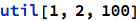
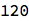
Allocation of objects & money
Allocation: Each agent is assigned an object and an amount of money: Agent i gets object  and money
and money  , and therefore derives an amount of utility
, and therefore derives an amount of utility  . The object-allocation σ is a bijection from agents to objects, and the money-allocation
. The object-allocation σ is a bijection from agents to objects, and the money-allocation  has 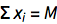.
has 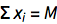.
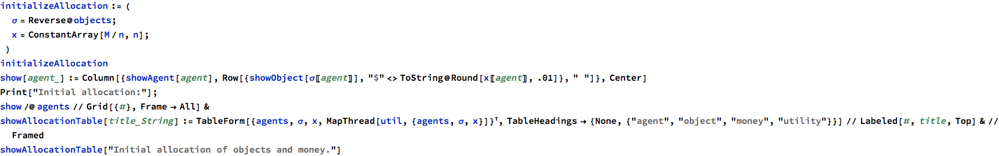

|
|
|
|
|
 |
| 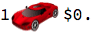 |
|
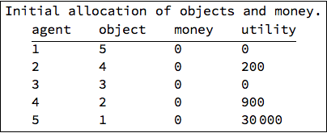
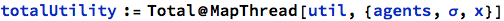

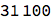
Envy
Envy: Given an allocation (σ,x), the quantity  is the amount of "envy" that agent i feels for agent j.
is the amount of "envy" that agent i feels for agent j.

- The first term is how much agent i likes agent j's loot. The second term is how much agent i likes his own loot.
- If e(i,j)>0, then agent i would have higher utility if he had agent j's loot instead.
- If e(i,j)==0, then agent i would keep the same utility if he had j's loot instead.
- If e(i,j)<0, then agent i would have lower utility if he had agent j's loot instead.
Table of envies:


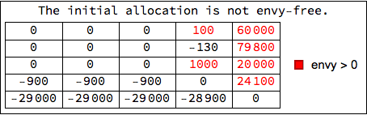
Problem Statement
Goal: find an allocation (σ,x) where no agent envies any other: e(i,j)≤0 for all i,j∈N.
Envy Graph
Envy graph: A graph where agents are vertices and i→j if e(i,j)≥0. If e(i,j)>0, i→j is called a strong edge. If e(i,j)==0 it's called a weak edge.

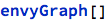

Useful functions for working the the envy graph:


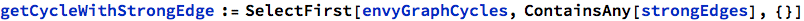


Next we discuss two procedures that will be used in the overall algorithm.
Permutation Procedure
Permutation procedure: You’ve got a cycle like i → j → k → i. Allocate objects and money like 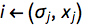,  ,
,  . Now everyone has an allocation they like better.
. Now everyone has an allocation they like better.

Example

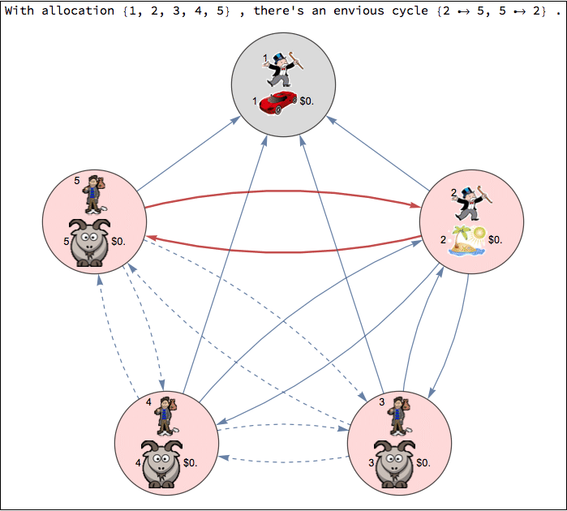


Sidepayment Procedure
Sidepayment procedure: You’ve got a strong edge i→j. Let P denote the agents for which a weak-edged path to i exists, and let R denote agents who are reachable along a weak-edged path starting from j. Take money from R and give it to P until a weak edge forms.
Analysis
We now determine the least amount of money to transfer for a weak edge to form.
Let t>0 denote the total amount of money that will be transferred from R to P. Let 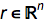 be defined as
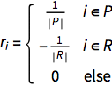
so that 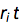 is the amount of money given to agent i for i=1,...,n. For any two agents i,j, the value of t that results in e(i,j)==0 — a weak edge from i to j — satisfies

and solving this for t yields
 .
.
Note that we only have t>0 in certain cases, for example when i∈R and j∈P. There are some cases, e.g., when i,j belong to the same class, for which !∃ t for which e(i,j)==0.
Therefore, the smallest t for which a weak edge appears is
 ,
,
where we only Min over the finite, positive values.
Code


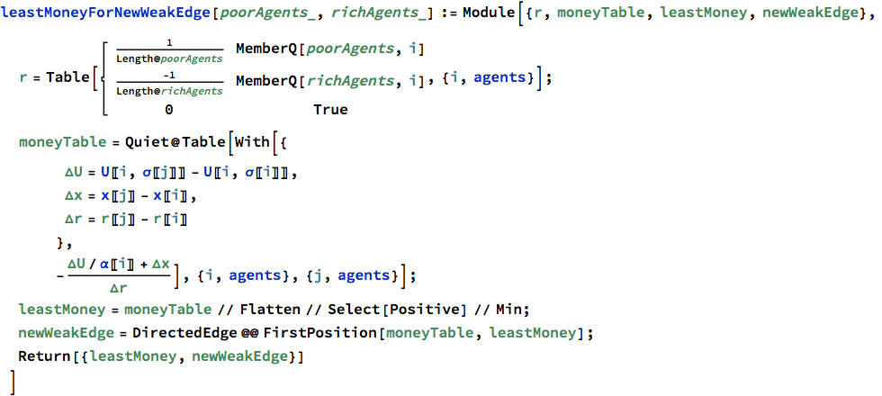

Computing the data relevant to the sidepayment before actually performing it allows us to display it without actually doing it.
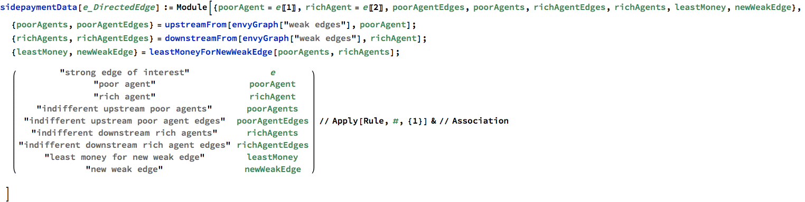
Here is the function that performs the sidepayment procedure.
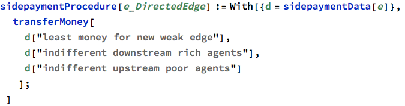
Example of sidepayment procedure
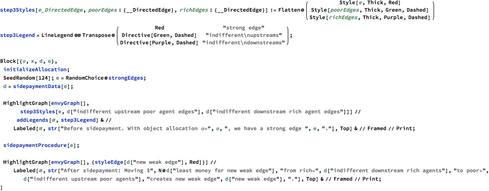


Final Algorithm
Algorithm: Let a feasible allocation (σ,x) be given. Consider its envy-graph.
Step 1. If there are no strong edges, then we have an envy-free allocation. Stop. Otherwise go to step 2.
Step 2. If there is a cycle containing a strong edge, then apply the permutation procedure and go to step 1. Otherwise pick a strong edge and go to step 3.
Step 3. Apply the sidepayment procedure to the picked edge and go to step 4.
Step 4. If a strong edge has been eliminated, go to step 1. If a cycle with a strong edge has emerged, go to step 2. Otherwise go to step 3.

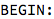
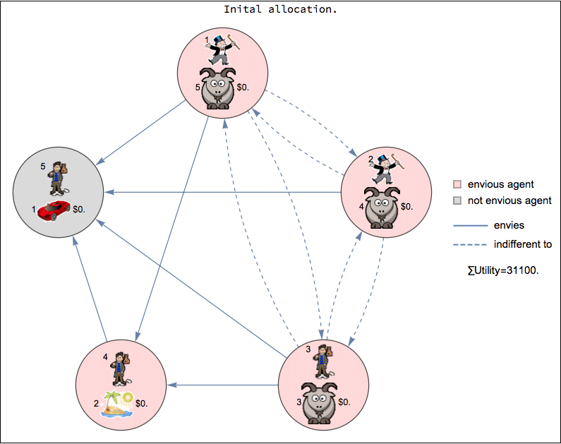


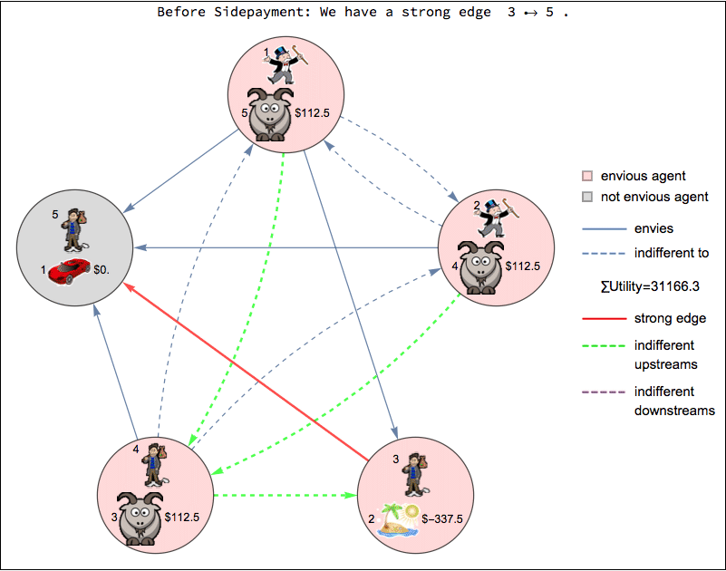


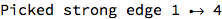


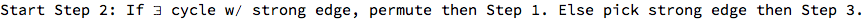


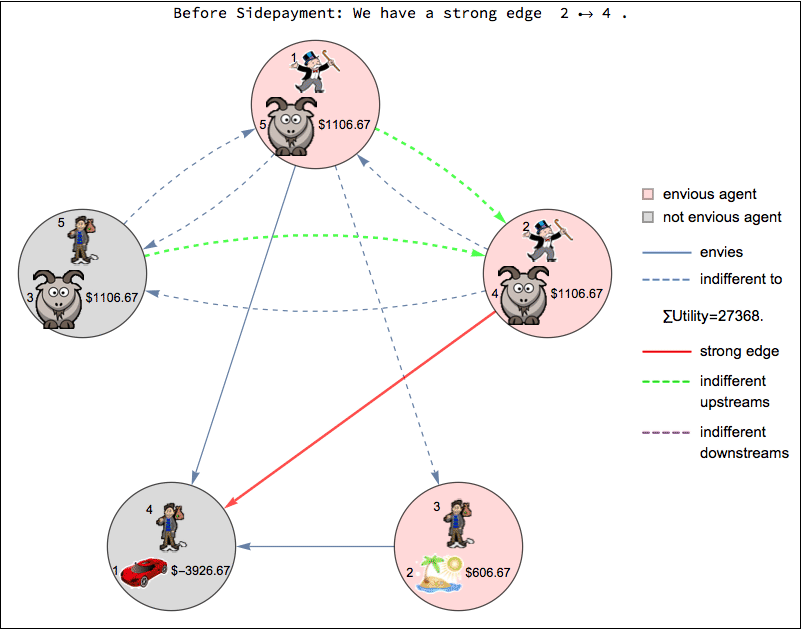


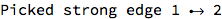


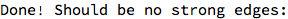

No net money is required; the agents pay each other:


Here are the final object allocations and money allocations:


Here is the final envy table. No one envies anyone else!


Save animation
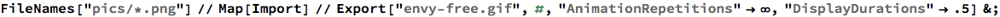